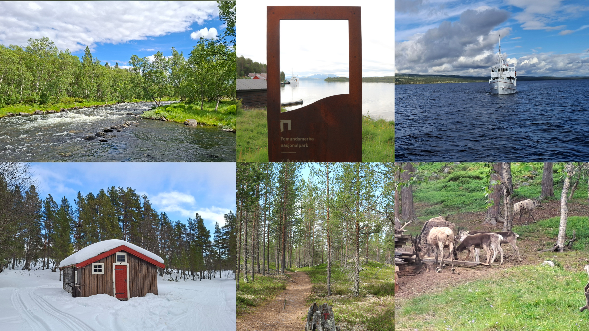

Soundscapes capture the role of sounds in the experience of place. The soundscape wheel represents a holistic approach to understanding soundscapes for scientific inquiry and education. In this version, we applied the soundscape wheel to Femundmarka National Park.
Select any category or wedge on the left to view its description, key references, and audio samples (where applicable).
View Acknowledgements & References💡 Tip: Click the center hole of the wheel at any time to return to this home screen.